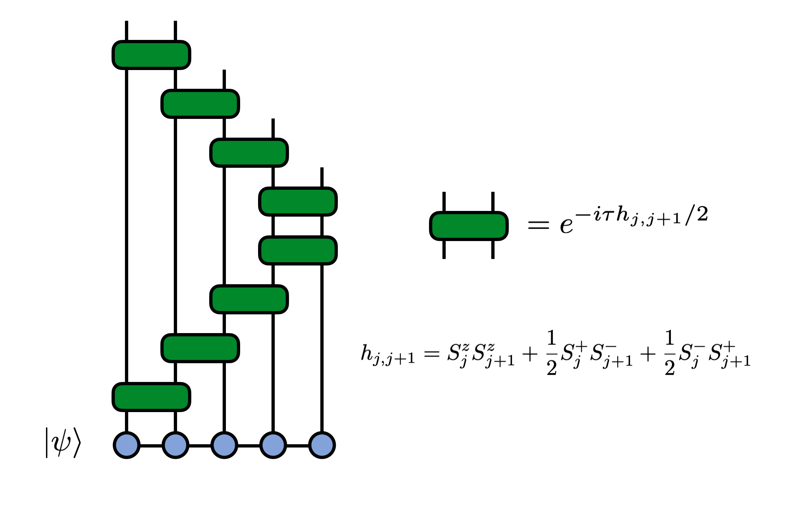

MPS Time Evolution
An important application of matrix product state (MPS) tensor networks in physics is computing the time evolution of a quantum state under the dynamics of a Hamiltonian $H$. An accurate, efficient, and simple way to time evolve a matrix product state (MPS) is by using a Trotter decomposition of the time evolution operator $U(t) = e^{-i H t}$.
The technique we will use is "time evolving block decimation" (TEBD). More simply it is just the idea of decomposing the time-evolution operator into a circuit of quantum 'gates' (two-site unitaries) using the Trotter-Suzuki approximation and applying these gates in a controlled way to an MPS.
Let's see how to set up and run a TEBD calculation using ITensor.
The Hamiltonian $H$ we will use is the one-dimensional Heisenberg model which is given by:
\[\begin{aligned} H & = \sum_{j=1}^{N-1} \mathbf{S}_{j} \cdot \mathbf{S}_{j+1} \\ & = \sum_{j=1}^{N-1} S^z_{j} S^z_{j+1} + \frac{1}{2} S^+_{j} S^-_{j+1} + \frac{1}{2} S^-_{j} S^+_{j+1} \end{aligned}\]
The TEBD Method
When the Hamiltonian, like the one above, is a sum of local terms,
\[H = \sum_j h_{j,j+1}\]
where $h_{j,j+1}$ acts on sites j and j+1, then a Trotter decomposition that is particularly well suited for use with MPS techniques is
\[e^{-i \tau H} \approx e^{-i h_{1,2} \tau/2} e^{-i h_{2,3} \tau/2} \cdots e^{-i h_{N-1,N} \tau/2} e^{-i h_{N-1,N} \tau/2} e^{-i h_{N-2,N-1} \tau/2} \cdots e^{-i h_{1,2} \tau/2} + O(\tau^3)\]
Note the factors of two in each exponential. Each factored exponential is known as a Trotter "gate".
We can visualize the resulting circuit that will be applied to the MPS as follows:

The error in the above decomposition is of order $\tau^3$, so that will be the error accumulated per time step. Because of the time-step error, one takes $\tau$ to be small and then applies the above set of operators to an MPS as a single sweep, then does a number $(t/\tau)$ of sweeps to evolve for a total time $t$. The total error will therefore scale as $\tau^2$ with this scheme, though other sources of error may dominate for long times, or very small $\tau$, such as truncation errors.
Let's take a look at the code to apply these Trotter gates to an MPS to time evolve it. Then we will break down the steps of the code in more detail.
ITensor TEBD Time Evolution Code
Let's look at an entire, working ITensor code that will do this calculation then discuss the main steps. (If you need help running the code below, see the getting started page on running ITensor codes.)
using ITensors, ITensorMPS
let
N = 100
cutoff = 1E-8
tau = 0.1
ttotal = 5.0
# Make an array of 'site' indices
s = siteinds("S=1/2", N; conserve_qns=true)
# Make gates (1,2),(2,3),(3,4),...
gates = ITensor[]
for j in 1:(N - 1)
s1 = s[j]
s2 = s[j + 1]
hj =
op("Sz", s1) * op("Sz", s2) +
1 / 2 * op("S+", s1) * op("S-", s2) +
1 / 2 * op("S-", s1) * op("S+", s2)
Gj = exp(-im * tau / 2 * hj)
push!(gates, Gj)
end
# Include gates in reverse order too
# (N,N-1),(N-1,N-2),...
append!(gates, reverse(gates))
# Initialize psi to be a product state (alternating up and down)
psi = MPS(s, n -> isodd(n) ? "Up" : "Dn")
c = div(N, 2) # center site
# Compute and print <Sz> at each time step
# then apply the gates to go to the next time
for t in 0.0:tau:ttotal
Sz = expect(psi, "Sz"; sites=c)
println("$t $Sz")
t≈ttotal && break
psi = apply(gates, psi; cutoff)
normalize!(psi)
end
return
endSteps of The Code
First we setsome parameters, like the system size N and time step $\tau$ to use.
The line s = siteinds("S=1/2",N;conserve_qns=true) defines an array of spin 1/2 tensor indices (Index objects) which will be the site or physical indices of the MPS.
Next we make an empty array gates = ITensor[] that will hold ITensors that will be our Trotter gates. Inside the for n=1:N-1 loop that follows the lines
hj = op("Sz",s1) * op("Sz",s2) +
1/2 * op("S+",s1) * op("S-",s2) +
1/2 * op("S-",s1) * op("S+",s2)call the op function which reads the "S=1/2" tag on our site indices (sites j and j+1) and which then knows that we want the spin 1/ 2 version of the "Sz", "S+", and "S-" operators. The op function returns these operators as ITensors and we tensor product and add them together to compute the operator $h_{j,j+1}$ defined as
\[h_{j,j+1} = S^z_j S^z_{j+1} + \frac{1}{2} S^+_j S^-_{j+1} + \frac{1}{2} S^-_j S^+_{j+1}\]
which we call hj in the code.
To make the corresponding Trotter gate Gj we exponentiate hj times a factor $-i \tau/2$ and then append or push this onto the end of the gate array gates.
Gj = exp(-im * tau/2 * hj)
push!(gates,Gj)Having made the gates for bonds (1,2),(2,3),(3,4), etc. we still need to append the gates in reverse order to complete the correct Trotter formula. Here we can conveniently do that by just calling the Julia append! function and supply a reversed version of the array of gates we have made so far. This can be done in a single line of code append!(gates,reverse(gates)).
The line of code psi = MPS(s, n -> isodd(n) ? "Up" : "Dn") initializes our MPS psi as a product state of alternating up and down spins.
To carry out the time evolution we loop over the range of times from 0.0 to ttotal in steps of tau, using the Julia range notation 0.0:tau:ttotal to easily set up this loop as for t in 0.0:tau:ttotal.
Inside the loop, we use the expect function to measure the expected value of the "Sz" operator on the center site.
To evolve the MPS to the next time, we call the function
psi = apply(gates, psi; cutoff)which applies the array of ITensors called gates to our current MPS psi, truncating the MPS at each step using the truncation error threshold supplied as the variable cutoff.
The apply function is smart enough to determine which site indices each gate has, and then figure out where to apply it to our MPS. It automatically handles truncating the MPS and can even handle non-nearest-neighbor gates, though that feature is not used in this example.